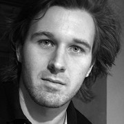

György Kovács
Graphic designer, art director and photographer. Kecskemét, Hungary.
Professional development
2010–Art director at Ulpius-ház Publishing Co.
2008–2010Graphic designer at Raster Studio
2007–2008Editor and illustrator of KulturWC Sopron
2006–Freelancing
Education
2003–2008Master of Industrial Design, Packaging Design Major — University of West Hungary, Institute of Applied Arts, Sopron
2002–2003Free School of Applied Arts, Kecskemét
1997–2003Katona József High School, Kecskemét
Exhibitions
2010The identity of a glover workshop, Kecskemét
2009Hungarian Design Award
200915 years — jubilee exhibition of Free Art School of Kecskemét
2008Best diplomas exhibition of Hungarian art universities, Ráckeve
2008Diploma Exhibition, Sopron
2006AMINDENIT Exhibition, Sopron
2006Converse Street Art Project, Sopron
2004National Theater Exhibition — POSZT, Pécs
2001–2005Exhibition of Free Art School of Mártély, Hódmezővásárhely
Grants, awards & honors
2009Hungarian Design Award, special prize
2008MAOE diploma prize
2007Label Competition at Wunderlich Winery, special prize
2007University calendar
Skills
Adobe Photoshop, Illustrator, InDesign, CorelDraw, Rhinoceros 3D, freehand drawing, photography.
Personal
Born 21 July 1984, Kecskemét, Hungary.
Things I like to do: freediving, paragliding, travelling, riding my bicycle, photography, painting, reading.